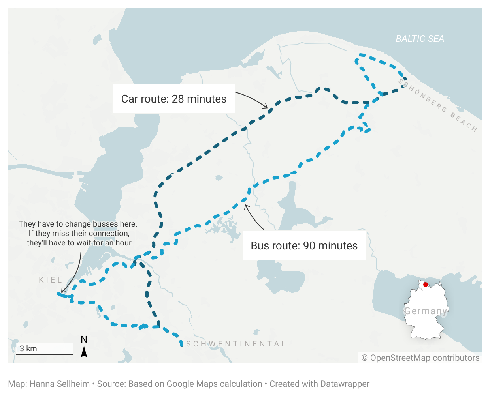

Northern Germany has many spots to go swimming. But a look at the data shows: Who actually gets to go to the beach is a question of infrastructure.
By Hanna Sellheim
It is a beautiful sunny Saturday in the state of Schleswig-Holstein in Northern Germany. The Müllers, an average Northern German family of four, want to spend the day swimming. Where should they go?
Let's say the Müllers live in Schwentinental, a midsize town right outside of the state capital Kiel, in the dictrict with the lowest per-capita income in the whole state. Their connection to public transport is not terrible – they even have a train station.
But: Of all swimming spots in the state, 38 percent are not within a 10-minute walk from a train or bus stop, as a spatial analysis shows.
But even if a swimming spot is close to a bus stop, that does not automatically mean that it is easily accessible. What if the Müllers adjusted their expectations and decided to spend the day at Schönberg beach, a beach in their district?
Schönberg beach is a mere 30-minute car ride away from the Müllers. With the bus, it takes them 90 minutes to get there, including a changeover at a busy intersection in Kiel where they might miss their connecting bus.
Things would get even more complicated if any of the family members had a disability.
But at least everybody can afford a day at the beach since it is a public place, right?
Instead of going on a bus odyssey, the Müllers borrow their friends' car to take a trip to St.Peter-Ording, one of the biggest beaches on the North Sea Coast. Let’s see what a day of beach fun costs them.
A total of 80 euros... and that doesn't even include the cost for gas or drinks. In 2025, the family also pays considerably more than they would have a couple of years ago.
So, as summers are getting increasingly hotter, will everybody have the same chances to cool off?